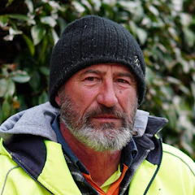

Trinkelių klojimas ir kiemo įrengimas
Esame meistrų komanda, kuri Kauno ir Vilniaus regionuose įrengia kiemus, įvažiavimus bei takus ir remontuoja seną trinkelių dangą.
Demo projektas

Apie mus
Nuo žemės kasimo iki trinkelių klojimo jūsų kieme dirba ta pati komanda. Turime savo mini ekskavatorių, savivartį ir klojimo įrangą, todėl visus darbus atliekame patys.

Mindaugas Petrauskas Darbų vadovas „Atvažiuosiu, apžiūrėsiu kiemą ir viską paskaičiuosiu. O jei darbų metu kils klausimų, skambinkite tiesiai man.“
Kodėl rinktis mus
Vienas kontaktas
Nuo pirmos apžiūros iki darbų pabaigos bendraujate su tuo pačiu žmogumi.
Sąmata raštu
Prieš pradedant darbus gaunate sąmatą, kurioje atskirai nurodytos darbų ir medžiagų kainos.
Mokėjimas etapais
Už kiekvieną darbų etapą mokate jį užbaigus.
Ką atliekame
Visi trinkelių dangos darbai vienoje vietoje: nuo naujo kiemo įrengimo iki seno įvažiavimo remonto.
-
Klojame betonines ir klinkerio trinkeles bei didelio formato plokštes.
- Trinkelių storio parinkimas pagal apkrovą
- Klojimas eglute, su perrišimu, pintine ar tiesiomis eilėmis
- Pjovimas kraštuose ir aplink šulinius
- Siūlių užpildymas ir dangos vibravimas
-
Naujas kiemas ar įvažiavimas nuo nulio arba žvyro pakeitimas trinkelėmis.
- Vietos automobiliams ir posūkių planavimas
- Nuolydžiai nuo namo ir garažo
- Storesnės trinkelės ir tvirtesnis pagrindas įvažiavimui
- Sujungimas su gatve, vartais ir laiptais
-
Takai nuo vartų iki durų, aplink namą ar į sodą ir terasos prie namo.
- Patogaus pločio parinkimas
- Vejos borteliai, kad žolė neužaugtų ant tako
- Laipteliai ir aukščių perėjimai
- Terasos iš plokščių su nuolydžiu nuo sienos
-
Nuo pagrindo priklauso, ar danga po kelių žiemų neįdubs.
- Augalinio sluoksnio nukasimas ir grunto išvežimas
- Geotekstilė molingame grunte
- Skaldos pagrindas, tankinamas sluoksniais
- Aukščių ir nuolydžių formavimas
-
Bortelis laiko dangos kraštą, kad trinkelės neišsiskirstytų.
- Kelio ir šaligatvio borteliai ant betono pado
- Vejos ir plastikiniai borteliai
- Pakelti borteliai prie gatvės ir įvažiavimo
- Senų, išvirtusių bortelių perstatymas
-
Kad vanduo nebėgtų į garažą, rūsį ar prie pamatų.
- Nuolydžiai nuo pastato
- Linijiniai latakai prie garažo vartų ir įvažiavimo
- Lietaus šulinėliai ir vamzdynai
- Prijungimas prie drenažo ar esamos sistemos
-
Taisome esamas trinkelių dangas, net jei jas klojo kiti.
- Įdubusių vietų ir provėžų išlyginimas
- Iškilusių ir išklibusių trinkelių perklojimas
- Suskilusių trinkelių keitimas naujomis
- Dangos atstatymas po vandentiekio, kanalizacijos ar kabelių darbų
- Išplautų siūlių užpildymas ir žolės pašalinimas
Darbų pavyzdžiai
Pavyzdiniai objektai
Prieš ir po
Tas pats sklypas iš viršaus: žvyras su provėžomis ir vanduo prie garažo, o šalia ta pati vieta įrengus trinkelių dangą su borteliais ir lataku.
Schema, ne nuotrauka. Vilkite slankiklį arba naudokite rodyklių klavišus.
Kiemo planuoklis
Pasirinkite dangą, nurodykite matmenis ir matykite orientacinę kainą. Tikslią kainą pasakysime apžiūrėję vietą.
Atsidarys el. laiškas su visais pasirinkimais ir nuoroda į šį planą. Liks tik įrašyti adresą ir telefoną.
Kainos išskaidymas, prielaidos ir kas neįeina
| Darbai ir medžiagos | Nuo | Iki |
|---|---|---|
| Iš viso | — | — |
Neįeina
- Latakai, šulinėliai, drenažas.
- Senos dangos ardymas ir išvežimas.
- Atraminės sienelės, laiptai.
- Vejos atkūrimas.
Svarbu
Tai orientacinis skaičiavimas, ne pasiūlymas. Kaina priklauso nuo grunto, aukščių, privažiavimo ir gamintojo. Pagrindo storį ir dangos tinkamumą nustatome tik apžiūrėję vietą.
Kaip vyksta darbai
- 01UžklausaVieta, plotas, ko norite.
- 02Nemokama apžiūraMatavimai, gruntas, aukščiai.
- 03SąmataRaštu, su terminu.
- 04PagrindasKasimas, borteliai, skalda.
- 05KlojimasTrinkelės, siūlės, vibravimas.
- 06SutvarkymasIšvežame gruntą bei atliekas ir sutvarkome kraštus prie vejos.
Ką sako klientai
— —Demo projektas: atsiliepimai ir įvertinimas pavyzdiniai. Tikroje svetainėje čia rodomi įmonės Google atsiliepimai.
Kas po trinkelėmis
Tinkamai paruoštas pagrindas lemia, ar danga ilgai išliks lygi. Paspauskite sluoksnį.
Kasimo gylis —